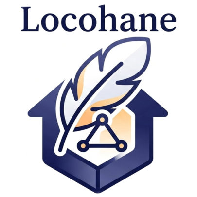
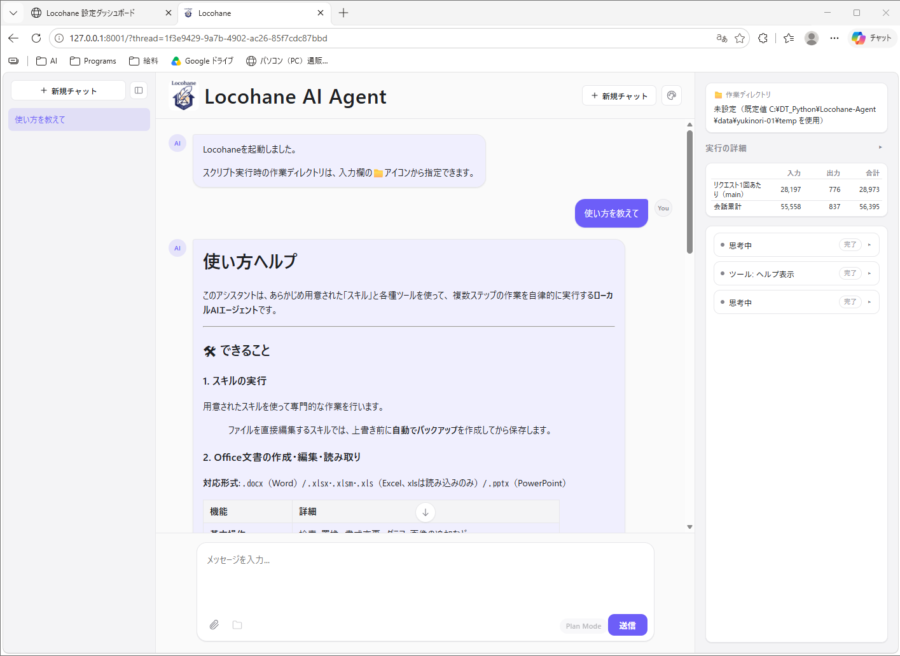
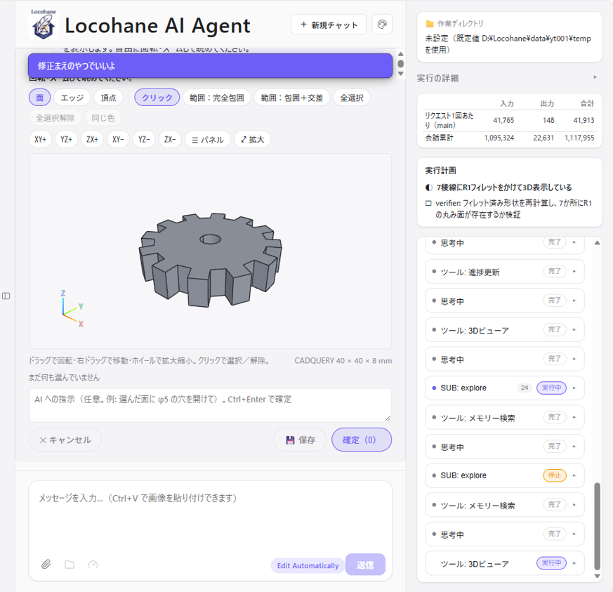
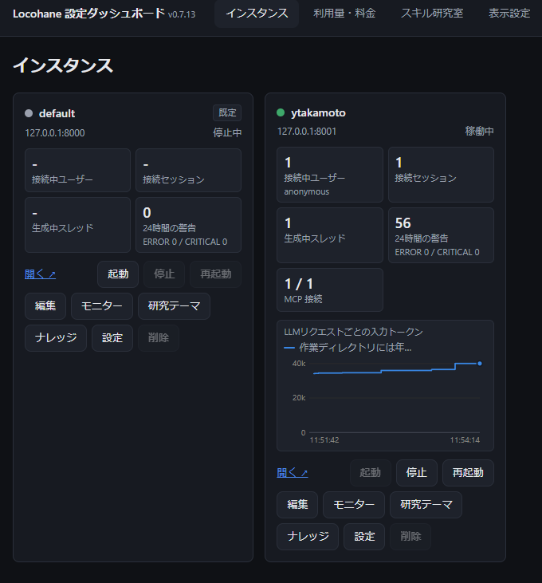

Locohane Agent
Locohane Agent3D CAD をチャットで見て、指さして頼む 機能検証中
- 見る：回転・拡大して形を確かめ、部品やレイヤーの表示や色を切り替え
- 指さして頼む：面・エッジ・頂点・部品をクリックで選び、「この面に φ5 の穴を開けて」と依頼
- 作る：「歯車を作って」と頼めば、AI が CadQuery で形を作ってそのまま表示
- 持ち帰る：STEP・DXF・色付き STL として保存
ブラウザのチャットで話しかけるだけで、Excel・Word・PowerPoint・PDF の読み取りや作成、 画像の確認、フォルダ内の大量ファイルの一括処理などを、AI が手順を考えながら進めます。 AI モデルも自社のサーバーで動かすので、会話もファイルも外部へ送られません。
名前の由来：Local（ローカル環境）+ 小羽（cohane / 和名）

社内データを外に出さずに、AI エージェントの使い勝手や効果を自社の業務で試せます。 Copilot Cowork や Claude Cowork のような「AI に仕事を任せる」働き方を検討している場合も、 そのイメージで社内の業務に当てはめて確かめられます。
現場の利用者が「いつもの手順」をチャットで相談するだけでドラフトスキル（業務手順書）を作成。開発担当者が「スキル研究室」で評価ケースとあわせて AI に不具合を自己修正させ、繰り返しの評価に合格したものを部署ごとの正式スキルとして公開できます。
AI の接続先や設定の変更、部署別インスタンスの起動・停止、稼働状況・会話・ログの確認をブラウザから。「AIに相談」に困りごとを書けば、どの設定を変えればよいかを AI が答えます。
トークン使用量を月別・部署別・ユーザー別に集計。AWS の料金（GPU インスタンスの時間課金・Bedrock などのトークン課金）を入力すると、本格導入時の想定料金を試算できます（円換算も可）。
STEP・IGES・DXF・STL などをチャット内の 3D ビューアで表示し、面や部品をクリックで指して AI に頼めます。穴・体積の数値確認、前の版との差分、STEP の PMI（寸法・公差）も扱えます。
設計業務のようにミスが許されない専門業務での利用を想定し、AI の性能の高さよりも「何度やっても同じ結果になること（再現性）」を優先しています。
AI モデルも自分のサーバーで動かすため、会話内容やファイルが外部へ送られません。既定では外部への通信を一切行いません。
ファイルを変更しうる作業は、実行前にチェックリスト形式の計画を提示し、あなたの承認を得てから進めます（自動承認も設定可）。
汎用シェルは持たせず、実行できるのは用意されたスキルのスクリプトと、安全ガード付きの Python コードだけです。
AI の暴走や誤操作を防ぐ仕組みを多数組み込み、高価な大規模モデルでなくても作業をやり遂げられるようにしています。
業務手順を SKILL.md にまとめておくと、AI がそれを読んで同じやり方で作業します。Agent Skills 標準準拠なので、将来の AI 基盤にも持ち出せます。
1 台のサーバーを複数人で同時に利用（ログイン機能あり）。チャット画面も管理ツールも PC・スマホのブラウザで使え、日本語と英語を切り替えられます。
AI がどのスキルを読み、どのツールを使っているかは画面上にステップとして表示されるので、作業の進み具合を確認できます。




「このフォルダの PDF から、図面番号と改訂日を一覧表にして Excel で出して」のように、普段の言葉で頼めます。
| 分野 | 内容 |
|---|---|
| Excel | 読み取り・新規作成・編集（書式・グラフ・画像・条件付き書式など）、数式の再計算、シートの画像化、VBA マクロの読み取り・編集・実行 |
| Word | 読み取り・新規作成・編集（検索置換・画像・変更履歴）、ページの画像化 |
| PowerPoint | 読み取り・新規作成・テンプレートの部分編集、スライドの画像化 |
| テキスト抽出・ページの画像化・PDF 作成（日本語対応） | |
| 画像 | 画像の内容を見て説明・判断（画像に対応したモデルを使う場合） |
| 3D CAD | STEP・IGES・BREP・DXF・STL や AI が CadQuery で作った形を 3D 表示し、クリックで選んだ箇所を AI に伝える |
| 大量ファイル | フォルダ内の多数のファイルへ同じ処理を、複数の AI に分担させて並列実行 |
| 記憶 | 「覚えておいて」と伝えた内容を、別の会話でも思い出して活用（永続メモリー） |
| 社内文書の検索 | 管理者が取り込んだ規程・手順書などから、質問に関係する箇所を意味で探して出典付きで回答（ベクター DB） |
| Web 検索 | Tavily API キーを設定した場合のみ（既定では外部通信なし） |
| 自分専用スキル | チャットで AI と相談しながら、自分専用の手順書（ドラフトスキル）を作成 |
必要なもの：Windows（Windows 11 で動作確認）、Python 3.11 の仮想環境、OpenAI 互換エンドポイントを提供する推論サーバー
（llama.cpp の llama-server・vLLM・Strata などで確認済み）とモデルファイル。GPU 推奨
（開発者は RTX 5060 Ti 16GB + Qwen3.6-35B-A3B で確認）。
python_env.bat.example を python_env.bat にコピーし、PYTHON_DIR を書き換えます。
call python_env.bat
python -m pip install -r requirements.txt例：llama-server（http://localhost:8080/v1 で待ち受け）
llama-server --model C:\path\to\model.gguf --alias local-model --host 127.0.0.1 --port 8080 -c 8192.env.example をコピーして .env を作り、ADMIN_USERS を設定します。
ADMIN_USERS=[["admin", "変更してください"]]admin.bat で管理ツール（http://127.0.0.1:8001）と Locohane 本体が起動します。初回ははじめてのチュートリアルが、AI の接続先の設定からチャット画面を開くまでを案内します。チャット画面は http://127.0.0.1:8000 です。
動かすモデルのライセンスはモデルごとに異なります。商用利用する場合は必ず確認してください（迷ったら Apache 2.0 のモデルが安全です）。 詳しい手順は README_DETAIL.md「セットアップと起動」を参照してください。